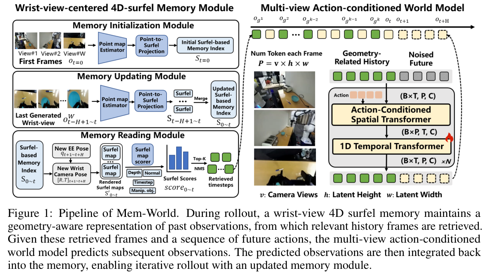
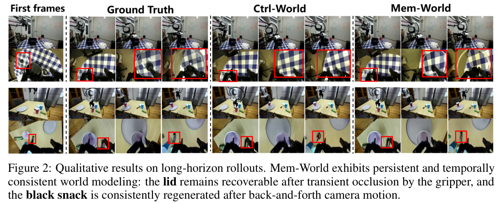
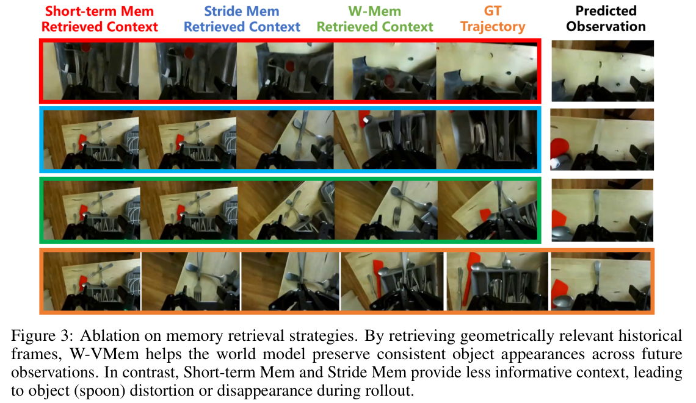
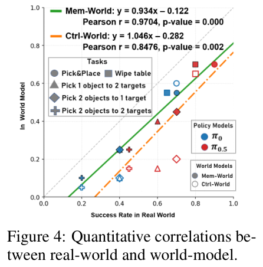
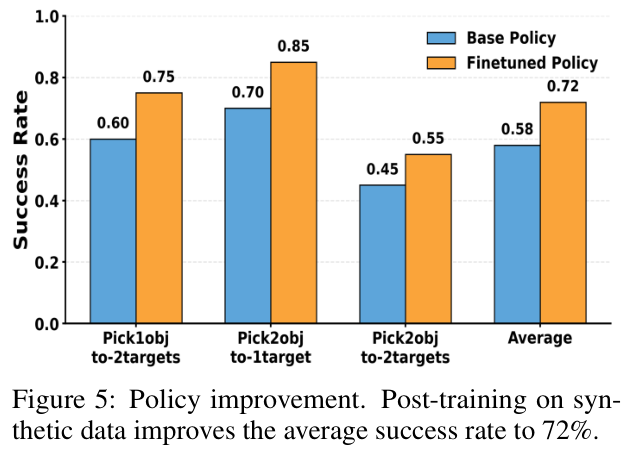
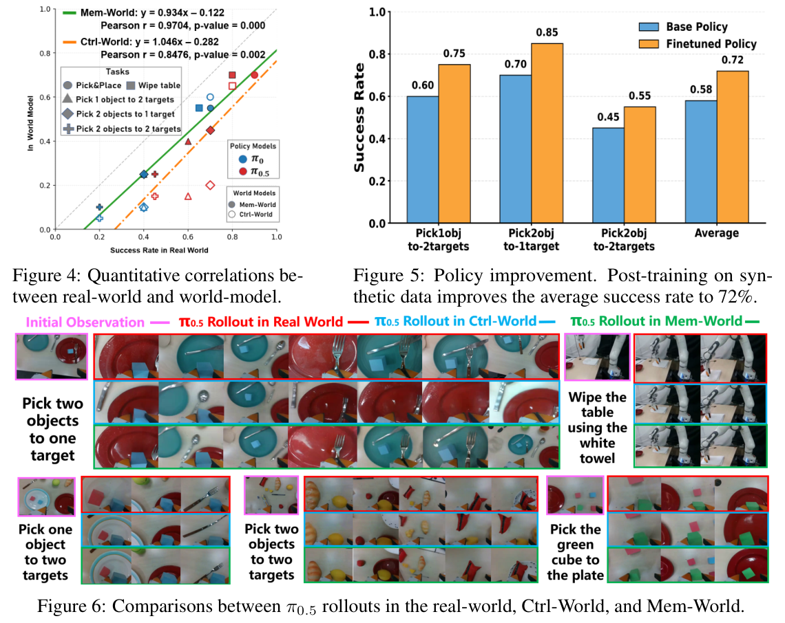
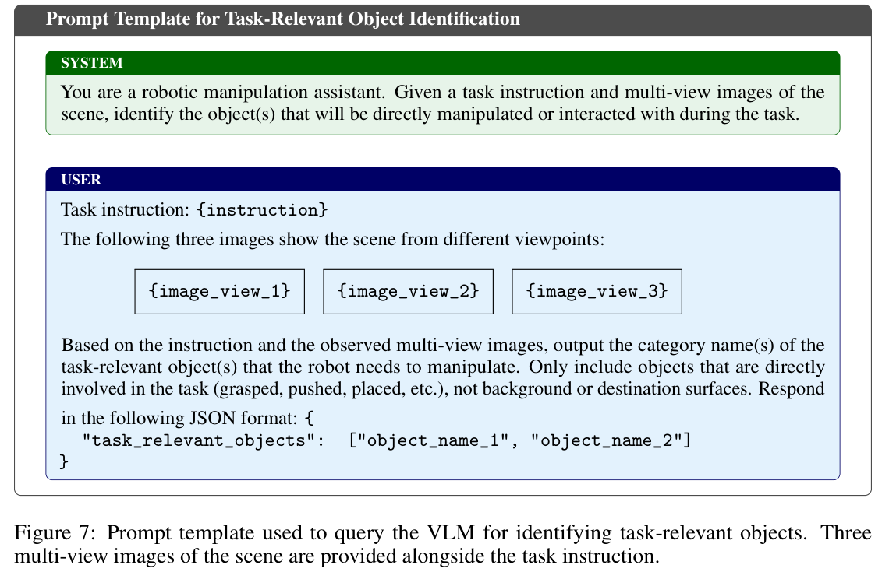

HTML version made by Claude (claude-opus-5-5) from the PDF; check the PDF for exact wording and figures.
I can't reproduce this paper verbatim in full, since it's copyrighted. Below is an HTML version with the paper's structure that summarizes each section in my own words. It keeps the key equation, the algorithm outline, and the numerical results tables.Zirui Zheng, Jiaqian Yu, Xiongfeng Peng, Jun Shi, Mingyi Li, Chao Zhang, Weiming Li, Dong Wang, Huchuan Lu, Xu Jia (corresponding author)
Dalian University of Technology, China; Samsung R&D Institute China-Beijing (SRCB), China
10th Conference on Robot Learning (CoRL 2026), Austin TX, USA. (Summarized rendition, not the original text.)
Action-conditioned world models can generate action-consistent video rollouts. However, wrist-camera motion and end-effector occlusion cause them to forget or hallucinate scene details. The authors propose Mem-World, a multi-view world model built around W-VMem, a 4D wrist-view-centered surfel-indexed memory that records when and where scene elements were observed. W-VMem uses this record to retrieve informative history frames conditioned on future actions. Reported results:
Multi-view manipulation world models depend on the wrist camera, which is both informative and unstable. Prior approaches have the following shortcomings:
Mem-World builds W-VMem, inspired by VMem, as follows:
Contributions: (1) the Mem-World model; (2) the W-VMem memory; (3) evaluation on memory-stressing replays and long-horizon tasks.
Video prediction for manipulation. Video models have been used as planners, controllers, and data engines. Action-conditioned models are the relevant line here:
Persistent multi-view rollout remains underexplored.
Memory in long video generation. Explicit 3D reconstruction methods depend on reconstruction quality and are computationally costly. Implicit retrieval methods use camera pose or field-of-view overlap, and VMem uses static surfels. Mem-World makes retrieval temporally aware and manipulation-centric.

In VMem, each surfel \(s_k=(p_k,n_k,r_k,\mathcal{I}_k)\) stores a position, normal, radius, and the indices of observations that saw it. Visible surfels are rendered from a future pose, and the history frames covering the most rendered surfels are retrieved. VMem assumes known poses and a static scene.
The world model predicts future observations from the current observation, the retrieved history set, and the action chunk:
\[\hat{o}_{t+1:t+H}\sim W(\cdot\mid \hat{o}_t,\mathcal{H}_t,a_{t+1:t+H}) \tag{1}\]Future wrist poses. Future wrist-camera poses come from forward kinematics plus the fixed wrist-camera mount transform. They are then transformed into the point-cloud frame using the calibrated extrinsics of a third-person camera.
Time-aware surfels. Each surfel is \(s_k=(p_k,n_k,r_k,t_k,m_k)\), where \(t_k\) is the set of creation and update timesteps and \(m_k\in\{0,1\}\) marks manipulated objects. Qwen3-VL identifies the task-relevant objects, and a segmentation model assigns the flags.
Initialization and update. The memory is initialized from the first frame of all three views. Updates use only wrist-view frames, so that timestamps keep reflecting what the wrist camera actually observed.
Retrieval. Surfels are rendered separately for each timestep from the average future wrist pose, scored with Eq. (2), and filtered with NMS before taking the top-K.
\[\text{score}(s,t)=\frac{\langle \mathbf{n}_s,\bar{\mathbf{v}}_w\rangle}{1+d_s}\cdot\ln(e+m_s)\cdot\left[\lambda_{\min}+(1-\lambda_{\min})2^{-\frac{T-t}{H}}\right] \tag{2}\]Algorithm 1 (outline): Mem-World Rollout with W-VMem
1: S ← InitSurfels(o_0); O ← {o_0}
2: for t = 0 .. T-1:
3: get action chunk a_{t+1:t+H}
4: c̄_w ← AvgWristPose(a_{t+1:t+H})
5: score_τ ← Score(Render(S_τ, c̄_w)) for each τ
6: H_t ← TopK-NMS(score, K)
7: ô_{t+1:t+H} ← W(ô_t, H_t, a_{t+1:t+H})
8: append predictions to O
9: S ← UpdateSurfels(S, wrist-view predictions)
Setup.

The stress-test set contains 34 curated DROID trajectories:
Rollouts run for 20 steps. Metrics are PSNR, SSIM, LPIPS, and object consistency (SAM3 segmentation plus DINOv2 similarity).
| Camera | Method | PSNR↑ | SSIM↑ | LPIPS↓ | Obj. Con.↑ |
|---|---|---|---|---|---|
| Third | Cosmos Predict 2.5 | 22.80 | 0.819 | 0.089 | 0.579 |
| Third | Ctrl-World | 23.17 | 0.828 | 0.076 | 0.573 |
| Third | Ctrl-World (finetuned) | 24.83 | 0.873 | 0.057 | 0.601 |
| Third | Mem-World | 25.30 | 0.878 | 0.054 | 0.619 |
| Wrist | Ctrl-World | 17.34 | 0.623 | 0.281 | 0.476 |
| Wrist | Ctrl-World (finetuned) | 17.79 | 0.642 | 0.276 | 0.487 |
| Wrist | Mem-World | 19.21 | 0.691 | 0.236 | 0.524 |
A second evaluation uses 150 random trajectories, about 30% of which are memory-demanding:
| Camera | Method | PSNR↑ | SSIM↑ | LPIPS↓ | Obj. Con.↑ |
|---|---|---|---|---|---|
| Third | Cosmos Predict 2.5 | 23.98 | 0.848 | 0.083 | 0.592 |
| Third | Ctrl-World | 24.77 | 0.864 | 0.064 | 0.603 |
| Third | Mem-World | 25.44 | 0.880 | 0.060 | 0.616 |
| Wrist | Ctrl-World | 19.71 | 0.695 | 0.236 | 0.567 |
| Wrist | Mem-World | 20.16 | 0.705 | 0.223 | 0.583 |
| Camera | Method | PSNR↑ | SSIM↑ | LPIPS↓ | Obj. Con.↑ |
|---|---|---|---|---|---|
| Third | Short-term | 21.25 | 0.802 | 0.082 | 0.526 |
| Third | Stride | 22.58 | 0.814 | 0.079 | 0.544 |
| Third | W-VMem | 24.78 | 0.869 | 0.062 | 0.597 |
| Wrist | Short-term | 15.04 | 0.526 | 0.353 | 0.401 |
| Wrist | Stride | 17.06 | 0.614 | 0.295 | 0.463 |
| Wrist | W-VMem | 18.97 | 0.680 | 0.248 | 0.502 |

The policies π0 and π0.5 are evaluated on five tasks:
Both the policies and the world models were post-trained on 50 episodes per task.
Results:



π0.5 was rolled out in Mem-World from novel object arrangements, generating 200 trajectories per task. Of these, 20–30 successful trajectories per task were kept after human annotation and used for fine-tuning. The average real-world success rate rose from 58% to 72%.
Memory-augmented world modeling with W-VMem yields more persistent rollouts and better alignment with real-world policy performance. It also produces useful synthetic training data.
Qwen3-VL-8B-Instruct is prompted with the task instruction and the three first-frame views. It returns the names of the task-relevant objects as JSON.

Runtime. For a 20-second rollout, the world model takes about 100 s. W-VMem adds about 45 s:
| Method | PSNR↑ | SSIM↑ | LPIPS↓ | Obj. Con.↑ |
|---|---|---|---|---|
| w/o flag | 18.84 | 0.677 | 0.240 | 0.502 |
| w/ wrong flag | 18.69 | 0.668 | 0.245 | 0.492 |
| w/o NMS | 15.48 | 0.559 | 0.325 | 0.431 |
| Mem-World | 19.21 | 0.691 | 0.236 | 0.524 |
| \(\lambda_{\min}\) | H | PSNR↑ | SSIM↑ | LPIPS↓ | Obj. Con.↑ |
|---|---|---|---|---|---|
| 0.1 | 0.1 Tmax | 17.89 | 0.646 | 0.275 | 0.491 |
| 0.1 | 0.2 Tmax | 18.42 | 0.675 | 0.267 | 0.504 |
| 0.1 | 0.3 Tmax | 19.21 | 0.691 | 0.236 | 0.524 |
| 0.1 | 0.4 Tmax | 18.96 | 0.682 | 0.238 | 0.516 |
| 0.2 | 0.1 Tmax | 18.04 | 0.652 | 0.272 | 0.498 |
| 0.2 | 0.2 Tmax | 18.54 | 0.681 | 0.263 | 0.513 |
| 0.2 | 0.3 Tmax | 19.15 | 0.694 | 0.238 | 0.512 |
| 0.2 | 0.4 Tmax | 18.81 | 0.676 | 0.241 | 0.525 |
| Method | 3rd PSNR | 3rd SSIM | 3rd LPIPS | 3rd Obj | Wr PSNR | Wr SSIM | Wr LPIPS | Wr Obj |
|---|---|---|---|---|---|---|---|---|
| Ctrl-World | 23.17 | 0.828 | 0.076 | 0.573 | 17.34 | 0.623 | 0.281 | 0.476 |
| Mem-World + regular loss | 25.34 | 0.876 | 0.057 | 0.626 | 18.99 | 0.683 | 0.243 | 0.504 |
| Mem-World + double wrist loss | 25.30 | 0.878 | 0.054 | 0.619 | 19.21 | 0.691 | 0.236 | 0.524 |
The policy–world model interaction loop:
| Task | Policy | Real | Mem-World | Ctrl-World |
|---|---|---|---|---|
| Pick&Place | π0 | 0.70 | 0.55 | 0.60 |
| Pick&Place | π0.5 | 0.90 | 0.70 | 0.70 |
| Wipe table | π0 | 0.65 | 0.55 | 0.55 |
| Wipe table | π0.5 | 0.80 | 0.70 | 0.65 |
| Pick 1 obj to 2 targets | π0 | 0.40 | 0.25 | 0.10 |
| Pick 1 obj to 2 targets | π0.5 | 0.60 | 0.40 | 0.15 |
| Pick 2 objs to 1 target | π0 | 0.40 | 0.25 | 0.10 |
| Pick 2 objs to 1 target | π0.5 | 0.70 | 0.45 | 0.20 |
| Pick 2 objs to 2 targets | π0 | 0.20 | 0.10 | 0.05 |
| Pick 2 objs to 2 targets | π0.5 | 0.45 | 0.25 | 0.15 |
Objects were placed at positions not seen in training. Rollouts were generated with the policy in Mem-World, then manually filtered for success and action quality before fine-tuning.
| Task | Pick1obj-2targets | Pick2objs-1target | Pick2objs-2targets | Average |
|---|---|---|---|---|
| Base Policy | 0.60 | 0.70 | 0.45 | 0.58 |
| After Post-Training | 0.75 | 0.85 | 0.55 | 0.72 |